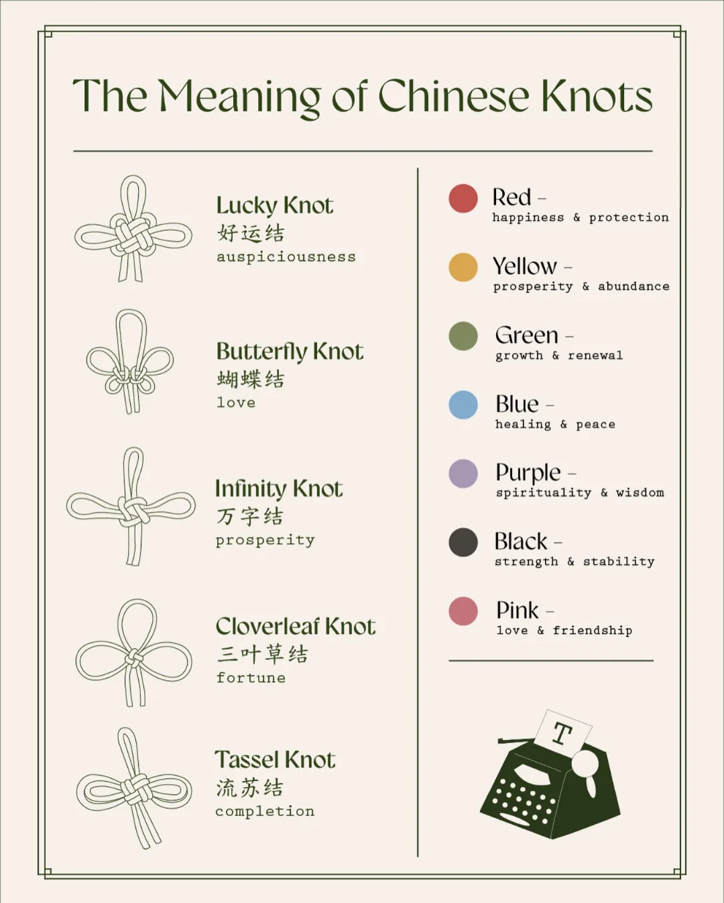
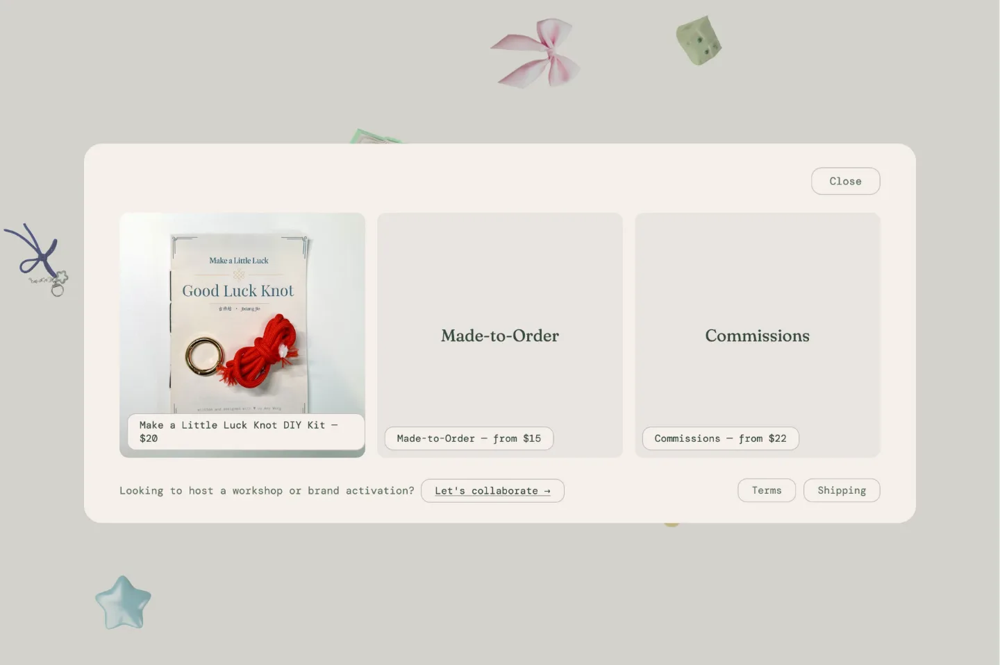
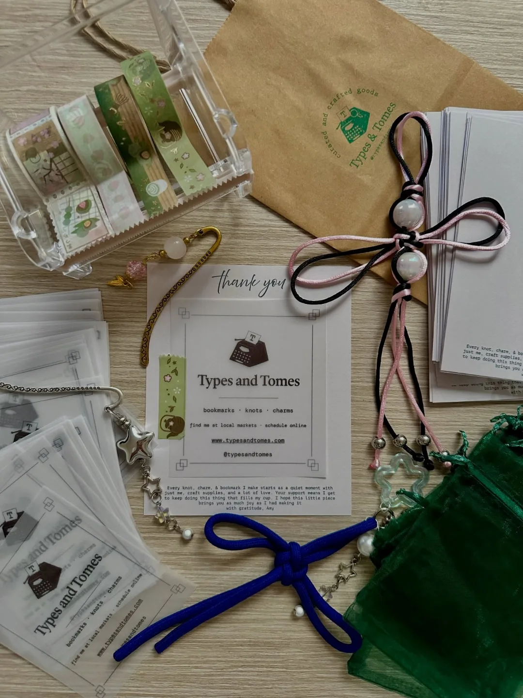
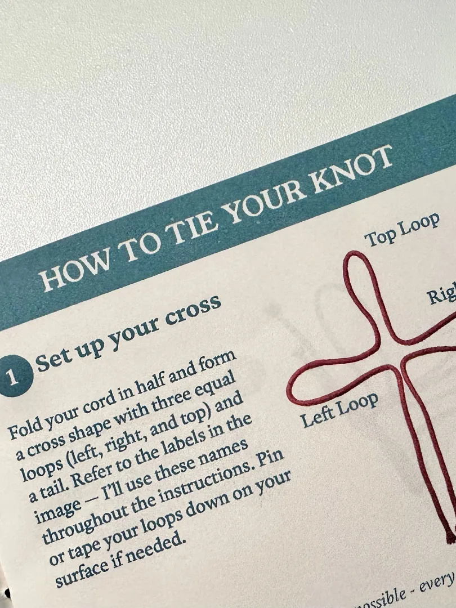
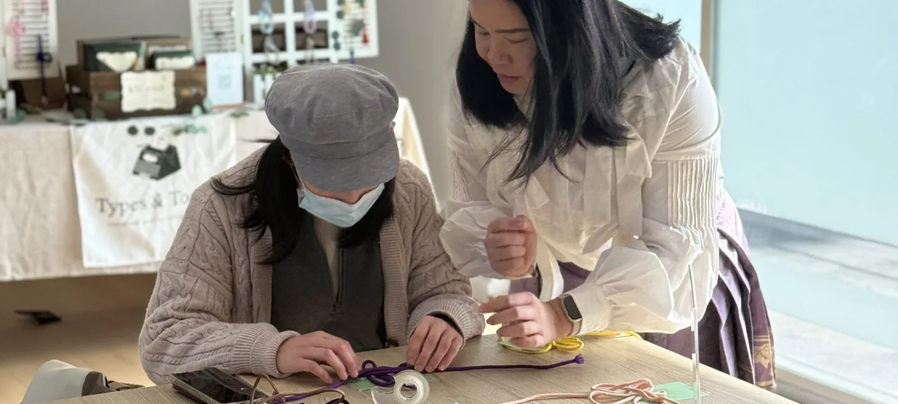
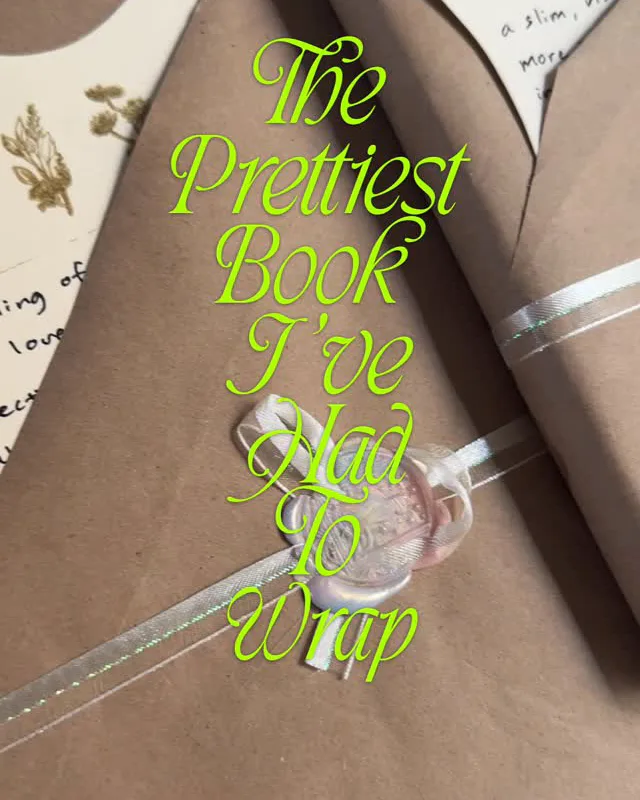
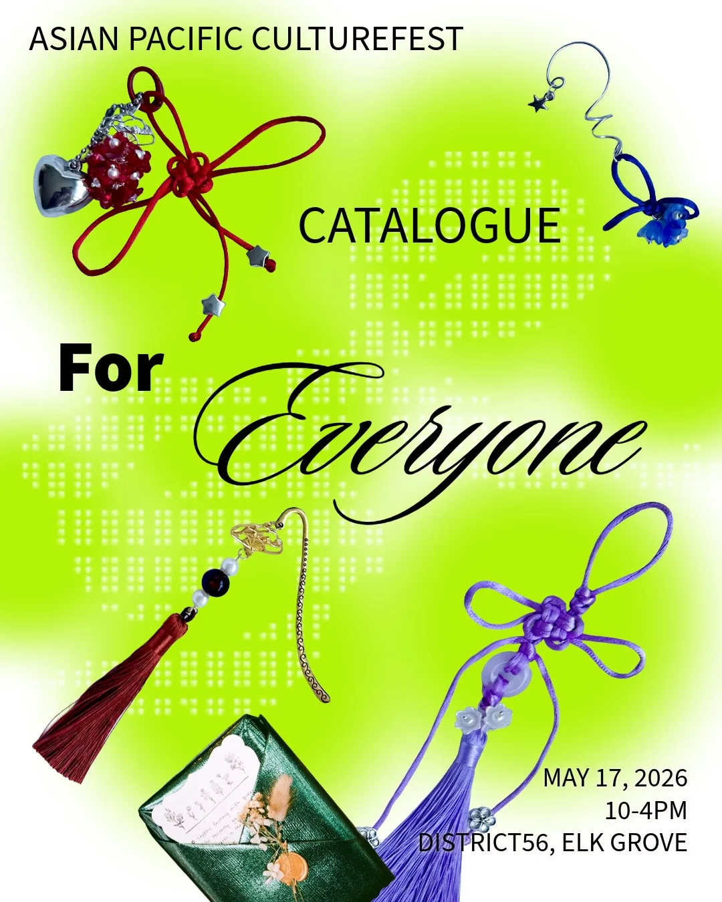

Types & Tomes
My own small-batch craft brand, with one identity carried across its website, kit packaging, workshops, market table and Instagram.
Brand Identity · Web Design · Packaging · Print & Social · 2026
Types & Tomes is a craft brand I started in 2023. The name comes from my hobbies of building mechanical keyboards (types) and reading books (tomes). There are Chinese knot charms, bookmarks and a DIY knot kit, plus workshops for teams and knotting stations for company events. It is my own business, so I was the designer and the client, and every piece on this page is my work.
Customers meet the brand in different places. Crafters and readers find it at a market or on Instagram, teams meet it in a workshop, and companies usually see the website first. Each of them should recognize the same shop, whether it is on a phone screen, a kraft bag or a table banner.
The core system
Four parts repeat on everything. The logo mark is a typewriter with a T on its sheet of paper. The wordmark is set in a serif. Prices, labels and small print use a monospaced face. The colors are deep green on cream. The post below, a guide to what each knot and cord color means, uses all four at once.

The website
The site is a single page. The landing screen, shown at the top of this page, sets the mark and wordmark on cream, with the tagline in the mono face and small 3D objects drifting around them. About, Shop and Collaborations open as panels over that screen, so the objects stay in view. The shop panel lists the knot kit at $20, made-to-order pieces from $15 and commissions from $22, then asks companies "Looking to host a workshop or brand activation?" I built the site by hand in HTML and CSS.

The knot kit
The kit is the main product. It holds red cord, an o-ring and a handbound, illustrated instruction zine, enough to make one knot charm in about an hour. The zine also sells on its own as an $8 PDF. Orders ship in a kraft bag stamped with the mark and "curated and crafted goods", with a thank-you card that repeats the mark and the mono line "bookmarks · knots · charms". In the zine, each step has a number, a short instruction and a labeled drawing of the cord, so a beginner can follow it alone.


Workshops and markets
The same zine is printed for every person at a team workshop and every guest at a company event, so what they take home matches what a kit buyer gets. At workshops and markets the table carries a cream cloth banner with the typewriter mark and wordmark, which you can see behind me in the photo.

Instagram and events
On Instagram the type and color get louder, because a post has to stop someone mid-scroll. The book-wrapping reel sets its title in a lime italic display face over kraft paper and ribbon. The catalog cover for Asian Pacific CultureFest (May 17, 2026, Elk Grove) goes bright lime with a red knot. The objects in both are the knots, cord and kraft paper that go into the kit.


What this means for your brand
A small brand usually ends up on a website, a package, a market table and a social feed, often designed at different times by different people. I design the few parts that repeat on every surface, and I decide which surfaces may change their type and color. Types & Tomes runs on that system as a working shop that takes orders, ships kits and books workshops.
Deliverables
- Brand identity
- Website design and build
- Packaging and print
- Social content